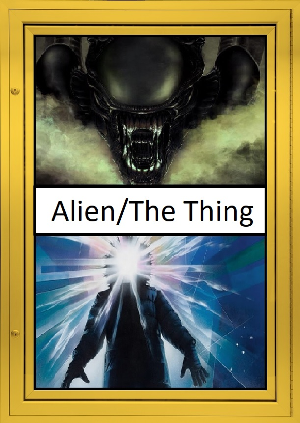

"In space no one can hear you scream," the same rule applies if you're in Antarctica. ALIEN is one of my favorite works of science-fiction to date. It expertly blends traditional sci-fi with elements reminiscent of the horror genre, with minimal effort. Not mention that the Xenomorph is one of the most iconic movie monsters of all time. If you're just as much of a fan of ALIEN as I am, then I highly recommend checking out John Carpenter’s: THE THING, from 1982.
THE THING revolves around a group of scientists, from an American research institute who discover an alien creature that can imitate other lifeforms perfectly. Now, on paper these two films may seem completely different, but upon inspection they're a lot more similar than expected. Both ALIEN and THE THING take place in isolated locations, both locations are much different than the usual places you’d normally see in any other horror movie (a spaceship is much more interesting than a cabin in the woods)
Something that both films have going for them are strong characters. What makes their characters so memorable is just how ordinary they appear to be. They are portrayed as regular people put in extraordinary situations. On one side, the characters in ALIEN are basically truckers in space on a routine mission to drop off supplies on Earth, while the people in THE THING are just scientists doing research in the cold wasteland that is Antarctica. The beginning of each film establishes the connections the characters have with each other, some of them are either good friends, or colleagues but ultimately know each other pretty-well. Soon things turn for the worst when the alien creature arrives, the characters begin to re-evaluate their relationships and soon start turning on one another, though this feeling is much more apparent in THE THING.
Lastly what ties these films together is the way they homage classic science-fiction films from the ‘50s. ALIEN is a retelling of IT! THE TERROR FROM BEYOND SPACE, meanwhile THE THING itself is a homage to the film, THE THING FROM ANOTHER WORLD, released in 1951. John Carpenter was a big fan of the film and wanted to create his own version of the movie.
So, if you're in the mood for a good scare that's out of this world, and you haven't seen THE THING yet, you should definitely check this one out.